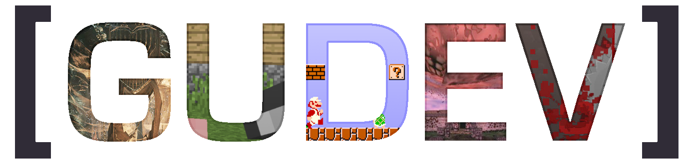

---
# You don't need to edit this file, it's empty on purpose.
# Edit theme's home layout instead if you wanna make some changes
# See: https://jekyllrb.com/docs/themes/#overriding-theme-defaults
layout: base
---
<div id="about">
    
    <h1>What is a GUDEV?</h1>
    <p>We are Glasgow University's Game Development Society. 
    We're dedicated to all fields of game development: the programming, the music, the art and design, the long sleepless nights spent staring into the void.</p>

    <p>We're a place for people who want to get into making games to meet and find others who can help them build 
        that one game they've wanted to create since they were kids. </p>
    
    <p>We're also here to challenge your game development skills with our 
    game jams - hackathon style events in which everyone tries to make a video game in a couple of days. 
    We just held our first game jam this march, and hope to hold more over the coming term. Watch this space for more information.</p>

    <p>If you have a project you're working on or a really good idea but need some artists or extra programmers to help you bring it to life, feel free to ask around for help on our 
    <a href="https://www.facebook.com/groups/gudev/">Facebook</a>/<a href="https://discord.gg/DhT3XgU">Discord</a> - just don't expect your game to make itself!</p>

    <p>Interested? We hope so! Whether you've made a thousand games or are a complete beginner, all you need to do to get involved is come along to our next event.</p>
</div>

